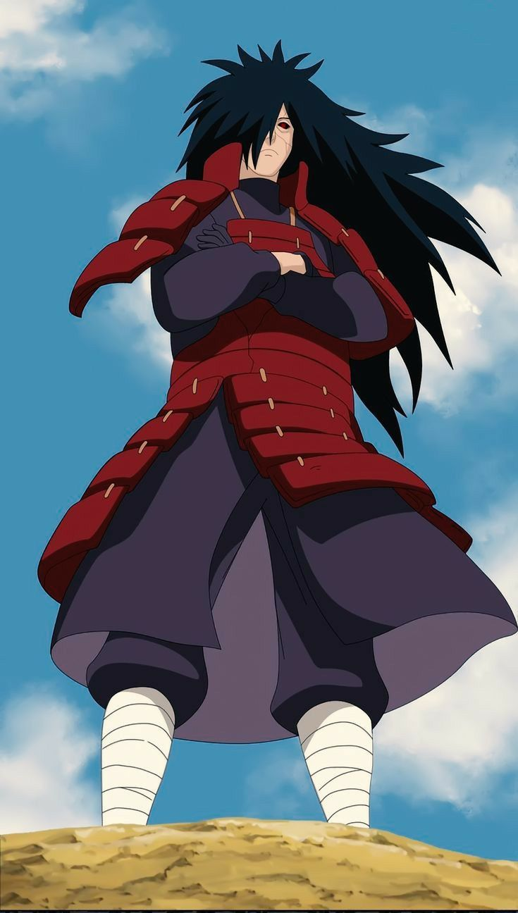

Madara Uchiha was one of the founders of Konohagakure and among the strongest shinobi in history. During the Warring States Period, he fought against the Senju Clan and later joined forces with Hashirama Senju to establish the Hidden Leaf Village. Despite sharing the dream of peace, Madara eventually lost faith in the village's future and pursued his own vision of peace through the Infinite Tsukuyomi.
Madara dreamed of creating a world without suffering, war, or loss. He believed the Infinite Tsukuyomi was the only way to achieve true peace.
"Wake up to reality. Nothing ever goes as planned in this accursed world."